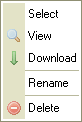

Tiedostoruutu listaa kansiossa sijaitsevat tiedostot.
Tiedostoruutu voidaan esitt盲盲 kahdella eri tavalla, riippuen CKFinderin asetuksista (katso "Asetukset"). Ohessa vertailu "Esikatselukuva" ja "Luettelo" -n盲kym盲st盲 samalle kansiolle:
Napsauta tiedostoa valitaksesi sen. Kun osoitin on tiedoston p盲盲ll盲, tiedostoalue muuttaa v盲ri盲盲n. Valitun tiedoston taustan v盲ri muuttuu, yleens盲 siniseksi.
Tiedoston edistyneempiin toimintoihin p盲盲set "pikavalikosta". Seuraavat toiminnot ovat valittavissa:

Huom: Jotkin pikavalikon valinnat voivat olla kytkettyn盲 pois, mik盲li p盲盲k盲ytt盲j盲 on n盲in valinnut.
Valitse tiedosto napsauttamalla "Valitse"-toimintoa.
Napsauta "N盲yt盲" esikatselleksallesi tiedosta selaimessa. Kaikentyyppisi盲 tiedostoja ei voida n盲ytt盲盲 selaimessa, mutta kuvat, teksti ja PDF-tiedostot (Adobe Portable Document Format) voidaan. Muissa tapauksissa selain kysyy, mill盲 sovelluksella haluat tiedoston avata.
Ladataksesi tiedoston, napsauta "Lataa"-nappia. Selain pyyt盲盲 esitt盲m盲盲n paikallisen kansion, johon haluat tiedoston ladata.
Napsauta "Uudelleennime盲"-nappia pikavalikosta antaaksesi tiedostolle uuden nimen. N盲kyviin ilmestyy ikkuna, joss lukee tiedoston nykyinen nimi. Anna uusi nimi ja kuittaa.
Kansio- ja tiedostonimiss盲 ei voi k盲ytt盲盲 kaikkia merkkej盲. T盲m盲 on k盲ytt枚j盲rjestelm盲kohtaista. Esim. : \ / : * ? " < > |
Huom: Kun uudelleennime盲t kansion, linkin tai mediatiedoston, jota k盲ytet盲盲n jollain toisellakin sivulla, toisen sivun linkit rikkoontuvat. Ole siis varovainen toimenpiteen suhteen.
Poistaaksesi tiedoston, napsauta "Poista" pikavalikossa. N盲kyviin ilmestyy ikkuna, jossa kysyt盲盲n varmistusta toimenpiteelle.
Huom: Kun poistat kansion, linkin tai mediatiedoston, jota k盲ytet盲盲n jollain toisellakin sivulla, toisen sivun linkit rikkoontuvat. Ole siis varovainen toimenpiteen suhteen.